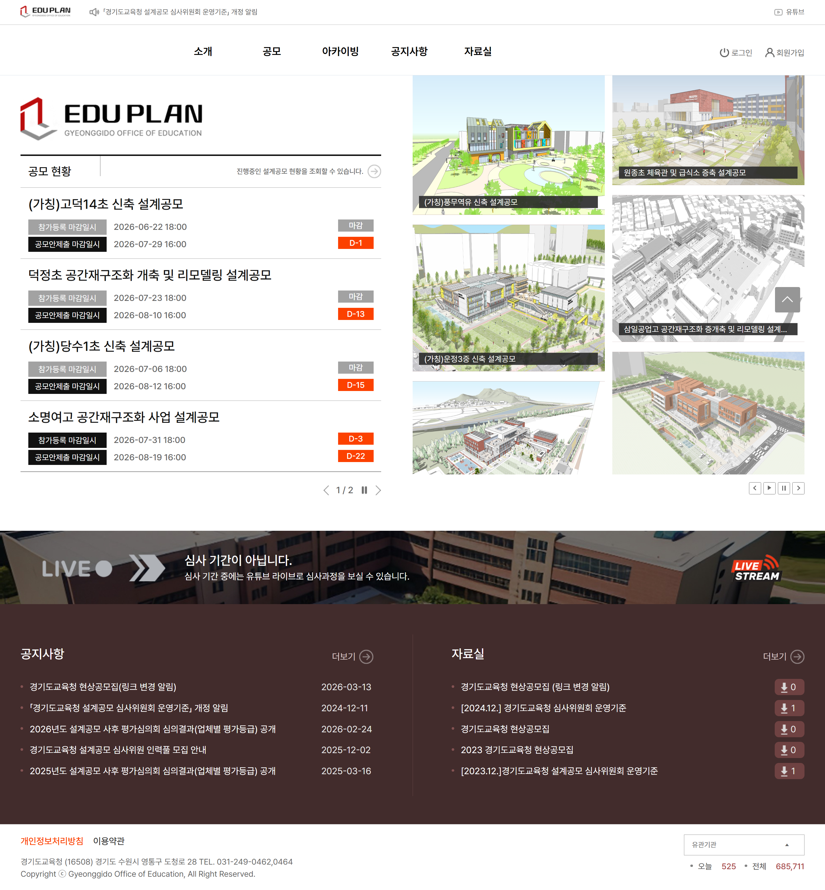
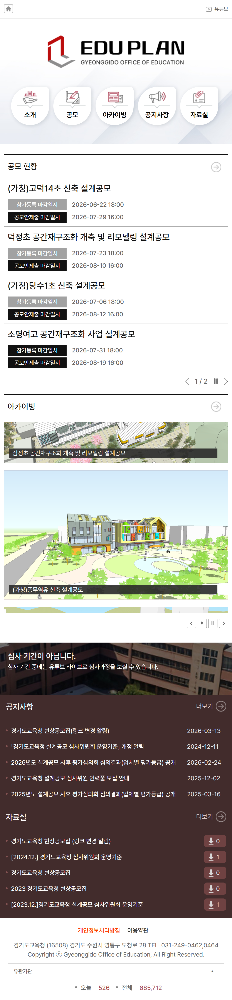
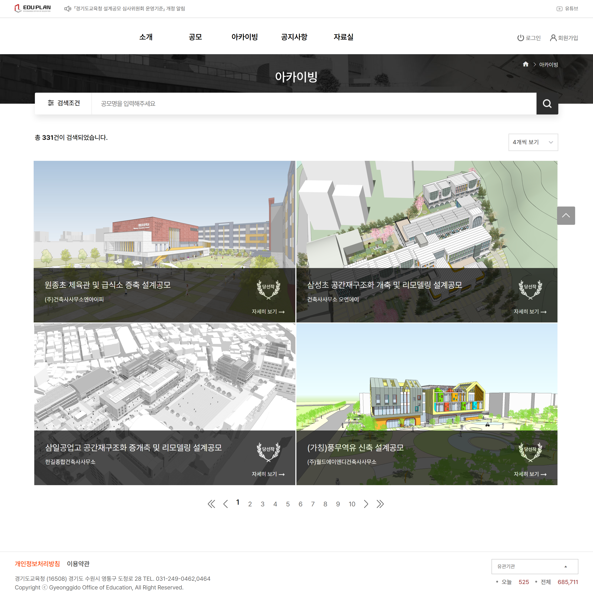
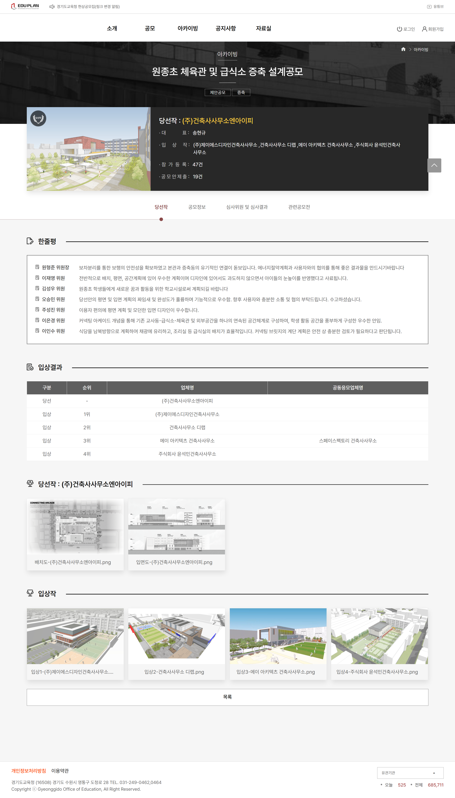
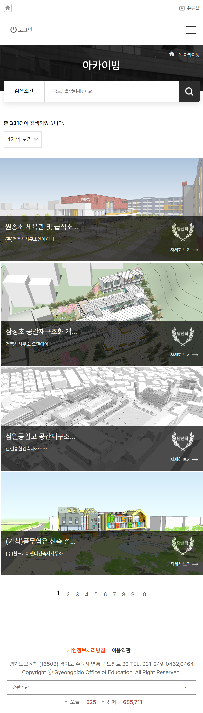

CONCEPT A
D-day 현황 및 매거진 스타일 비주얼 UI 시안
상단 영역에 신규 공모 건수와 간담회 소식을 강조하고, D-day 뱃지 중심의 진행 공모와 아카이빙 롤링 슬라이드를 조합하여 매거진 형태의 세련된 비주얼을 전달하도록 기획한 시안입니다.
UI/UX 디자이너 이지수


좌측 상단 공모 현황 영역에 참가등록 및 공모안 제출 마감 일시를 D-day 레드 뱃지로 강조하여 직관적인 탐색 편의성을 극대화했습니다. 우측에는 대표 설계공모 당선작 3D 조감도를 그리드 배치하여 시각적 완성도를 높였으며, 중앙 유튜브 라이브 심사중계 배너와 하단 자료실 연결로 신뢰감 높은 공공 심사 platform을 구현했습니다.
역대 학교 건축 설계공모 당선작을 체계적으로 감상할 수 있는 갤러리형 레이아웃입니다. 고해상도 조감도 카드 위로 공모명, 설계사명, 당선작 뱃지, 자세히 보기 버튼을 감각적으로 배치했으며, 상단 검색바와 정렬 필터를 정돈하여 사용자가 원하는 프로젝트를 신속하게 찾을 수 있도록 최적화했습니다.

개별 공모의 종합 결과를 한눈에 확인할 수 있는 상세 페이지입니다. 상단 당선작 요약 메타정보 패널을 시작으로 심사위원별 한줄평, 입상 결과 표, 당선작/입상작 3D 조감도 및 도면 다운로드 영역을 세로 스크롤 구조로 깔끔하게 분할하여 공정한 심사 결과 공개와 고품질 데이터 제공을 완성했습니다.

스마트폰 및 태블릿 해상도에서도 화면 깨짐 없이 쾌적하게 이용할 수 있도록 모바일 레이아웃을 고도화했습니다. 복잡한 공모 일정과 아카이빙 조감도 카드가 세로 1열 구조로 자연스럽게 재배치되며, 터치 친화적인 버튼 크기와 높은 가독성을 갖추어 이동 중에도 편리하게 공모 정보를 조회할 수 있습니다.

최종 채택안 외에 브랜드 방향성을 검토하기 위해 기획·제작되었던 디자인 컨셉 시안입니다.
상단 영역에 신규 공모 건수와 간담회 소식을 강조하고, D-day 뱃지 중심의 진행 공모와 아카이빙 롤링 슬라이드를 조합하여 매거진 형태의 세련된 비주얼을 전달하도록 기획한 시안입니다.

상단에 해시태그 키워드 검색바를 배치하고, 공모 현황을 일반/제한/제안 공모 탭과 카드 그리드로 구조화하여 사용자가 관심 분야의 공모를 빠르게 탐색할 수 있도록 접근성을 강화한 시안입니다.